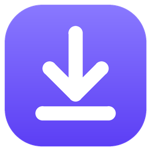

Rit DownloaderVideos, music and software.
Saved in one click.
Download every sermon from a channel as video or MP3, in the quality you choose. Download software and files from any website. Watch and listen in the built-in player. Free for Windows and Mac.

Download software from any website
Paste a program's download link or its download page, for example VLC, 7-Zip, LibreOffice, OBS Studio, Audacity, GIMP or Python. Rit Downloader lists every installer and file on the page (.exe, .msi, .zip, .dmg, .apk, .iso…). GitHub projects work too.
- Several connections at once for speed
- Pause and resume, even after a restart
- A SHA-256 checksum to confirm the file is genuine
- Programs are never run automatically, and Windows SmartScreen still checks them
A built-in player
Watch and listen to everything you download, in every format, right inside the app. Stream search results without downloading them. A mini-player keeps playing while you search and download.
- Continues where you stopped
- Speed from 0.75× to 2×, ideal for sermons
- Sleep timer, shuffle, repeat and a play queue
- Full screen, picture-in-picture, keyboard and media keys
Whole channels at once
Load every video and live service from a channel, then filter by title or length and sort by date.
Video or audio
MP4, MKV or WebM from 4K down to 144p. MP3, M4A, FLAC or WAV from 320 down to 64 kbps.
Never a duplicate
Everything you already have is marked and skipped. Each channel keeps its own folder, and "Keep up to date" fetches only new sermons.
13 languages
English, French, Spanish, Portuguese, German, Indonesian, Russian, Swahili, Hausa, Yoruba, Arabic, Chinese and Hindi.
Private by design
A password lock keeps others on your computer out. Everything stays on your device.
Schedule downloads
Download tonight, at 2 a.m. or on Saturday. Any video, audio, channel or software file can be scheduled.
Tidy up
Delete files to the Recycle Bin from anywhere in the app. Clear lists and remove duplicate copies.
Many sites
YouTube and SoundCloud search, plus links from Facebook, Instagram, TikTok, X and over 1,800 other sites.
Downloads
| Your computer | File | |
|---|---|---|
| Windows 10 or 11 (64-bit) | Installer (.exe) | Recommended |
| Windows, no installation | Portable (.zip) | Unzip and run RitDownloader.exe |
| Mac with Apple Silicon (M1 to M4) | Disk image (.dmg) | macOS 11 or newer |
| Mac with an Intel processor | Disk image (.dmg) | macOS 11 or newer |
Not sure which Mac you have? Apple menu › About This Mac. If it says "Chip: Apple M…", choose Apple Silicon. · All versions and release notes
Installing
Windows
Run RitDownloader-Setup-Windows.exe. If a blue "Windows protected your PC" box appears, click More info, then Run anyway. This appears because the app is new and not yet widely downloaded. No administrator rights are needed.
Mac
Open the .dmg and drag Rit Downloader into Applications. The first time you open it, macOS may block it. On macOS 15 or newer, go to System Settings › Privacy & Security and click Open Anyway. On older versions, right-click the app and choose Open. The app then appears in the menu bar at the top of the screen.
Is it safe? Does it cost anything?
It's free. It runs entirely on your own computer and doesn't collect or send any personal data. It connects only to the sites you download from and, to check for updates, to GitHub.
Downloads stopped working
Open Settings › Update in the app. Video sites change often and the download engine updates to keep up.